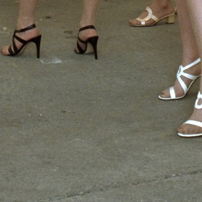

About Me

Alex Curington is an artist, graphic designer, and art director residing Dallas Texas. She currently makes art and lives live in Oak Cliff with her two cats. The first sixteen years of her life were in Farmersville Texas. She graduated from Texas Christian University in Fort Worth Texas with a BFA in Graphic Design in 2010. Her work derives from found objects, DYI aesthetic, trash art, and creative collaboration. The rawness of her work mirrors her constant self-evolution. Alex is currently expanding her knowledge of code this Fall at Southern Methodist University.
I am an artist, graphic designer, and art director residing Dallas Texas. I currently make art and live live in Oak Cliff with my two cats. The first sixteen years of my life were in Farmersville Texas. I graduated from Texas Christian University in Fort Worth Texas with a BFA in Graphic Design in 2010. The majority of my work experience has been within the Dallas art scene and freelance jobs. My work derives from found objects, DYI aesthetic, trash art, and creative collaborations. The rawness of my work mirrors her constant self-evolution. I plan to expand my knowledge of code this Fall at Southern Methodist University.